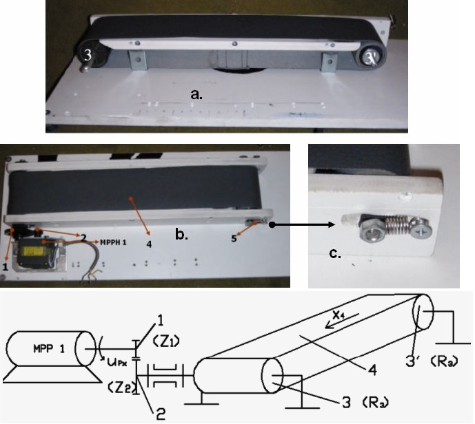

This was my final year project in college and later one of the motivations to build my cnc milling machine.
I scored second place at The Student Scientific Session (local contest where students present their projects).
I combined 4 steeper motors and a video camera to automatically
adjust the potentiometers on pcb boards based on human input.
 The complexity of this project came from finding the right parts for free
(at that time the college was not offering any financial help but they let me use their
National Instruments 4 axis driver board and the video camera).
X axis stepper motor came from an old printer, Y axis lead screw came from a micrometer,
Z axis (up-down and rotation) were actually sub-assemblies from old floppy disks cut to fit my purpose.
The complexity of this project came from finding the right parts for free
(at that time the college was not offering any financial help but they let me use their
National Instruments 4 axis driver board and the video camera).
X axis stepper motor came from an old printer, Y axis lead screw came from a micrometer,
Z axis (up-down and rotation) were actually sub-assemblies from old floppy disks cut to fit my purpose.
MPP1 motor is moving the conveyor belt bringing the pcb board under the screwdriver assembly.
MPP2 motor is position the screwdriver assembly left-right depending where the pcb board is on the conveyor.
MPP3 motor will lower the screwdriver assembly until it will make contact with the pcb board.
MPP4 motor will align the screwdriver to mach the potentiometer and it will spin it to the desired value.
The position of the pcb board and the potentiometer on the pcb board where calculated thru image processing algorithms in labVIEW.
Everything that was related with the stepper motors (acceleration, deceleration, errors) was also done in thru labView.